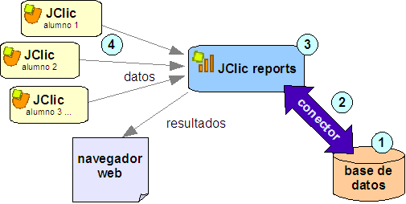

|
JClic reports server
JClic dispone de un sistema de registro de los resultados de las actividades. JClic reports es el módulo encargado de recopilar los datos (tiempo empleado en cada actividad, intentos, aciertos, etc...) y presentarlos después en informes estadísticos de diversos tipos.
Funcionamiento
JClic reports se basa en un esquema cliente
- servidor. El servidor puede ser cualquier ordenador de la red, y los clientes son de dos tipos: las aplicaciones JClic (applet i player),
que envían al servidor las puntuaciones obtenidas por los usuarios al realizar las actividades, y los navegadores web (Firefox, Opera,
Explorer...) desde los que se pueden consultar los resultados y administrar la base de datos.
Para poner en funcionamiento al servidor necesitaremos tres elementos:
- Un sistema de bases
de datos, en el que se almacenará la información. Debe soportar transacciones SQL y disponer de algún conector JDBC o ODBC. Hay muchos sistemas, tanto comerciales como libres, que cumplen estos requisitos: mySQL,
MS-Access, PostgreSQL, Oracle, etc.
- Un conector que permita la
comunicación entre la base de datos y el programa JClic
reports. Los conectores utilizados por las aplicaciones Java son del tipo JDBC, pero también se pueden utilizar conectores ODBC.
- El programa JClic
reports, que realiza dos funciones:
- Por un lado ofrece a los clientes JClic la información necesaria para identificar
a los usuarios, iniciar las sesiones de trabajo y recibir los resultados: nombre de la actividad,
número de intentos y aciertos, tiempo empleado, etc.
JClic reports almacena esta información en la base de datos mediante el conector.
- La segunda función consiste en procesar los datos almacenados y mostrarlos en diversos formatos. Esta consulta se puede realizar desde cualquier navegador web: Firefox, Safari, Internet Explorer,
etc.
En este esquema se muestran los diversos elementos del sistema y sus interacciones:

Modalidades
La comunicación entre JClic reports y sus clientes (JClic applet, JClic player, navegador web, etc.) se puede establecer de dos maneras:
- Por conexión directa (modalidad estándar)
En esta modalidad JClic reports abre una ventana en el servidor en la que se muestra
información de lo que va haciendo, y ofrece unos botones para pararlo, ponerlo en marcha y consultar los resultados desde un navegador.
- Mediante un servidor de aplicaciones
Java (modalidad
avanzada)
Esta modalitat no requiere ningún entorno gráfico. JClic reports actúa como un conjunto de servlets integrados
en un servidor de aplicaciones J2EE.
Configuración del sistema
Para configurar el sistema de informes de JClic
hay que seguir cuatro pasos, que afectan a los cuatro elementos que aparecen numerados en el esquema:
- Crear una base de datos.
- Configurar el conector.
- Configurar el servidor de informes JClic reports.
- Configurar los clientes JClic para que hagan uso del servidor de informes.
Los pasos a seguir para realizar estas operaciones serán diferentes según el tipo de base de datos y entorno operativo. En estas guías se explica detalladamente el proceso en diversas situaciones:
Modalidad estándar
Modalidad avanzada
Documentación adicional
Estos son algunos documents y archivos que os pueden resultar de interés para configurar la base de datos y realizar el mantenimiento del sistema:
|